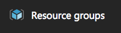

Exercise 3: Use the Azure management portal to set up a resource
In this exercise, you will learn how to navigate and manage the Azure portal by creating, managing, and deleting a new virtual machine resource.

You will need an Azure account to complete this exercise.
Create a new Virtual Machine
- Open a web browser and go to the Azure Management Portal. You will be presented with a dashboard view of your resources; it is likely empty if you have just created your account.
- Click on the + New button in the sidebar.
- Search for Visual Studio.
- Choose one of the VS styles, and click Create to create the resource.
- Fill in the VM details and click OK.
Note: There may be a drop down that says Deployment Model, just leave it as "Resource Manager" as that is the newer style which allows you to group resources together so they can be activated, deactivated or even deleted as a group rather than individually ("Classic" mode).
Customize your Virtual Machine
With our Virtual Machine basics in place, let's customize its size and storage.
- On the Choose a size dialog, click View all to show other pricing options.
-
Since this is just a test, we will choose the least expensive VM we can create - scroll down and select it. It will be named something like A0 Basic. It won't run VS very well, but we will be able to at least explore it without taking too much away from our monthly credit.
- The next blade lets you adjust the storage type (disk or SSD), networking options and additional extensions you want to add to the VM such as anti-virus. This also lets you configure the diagnostic metrics gathered from this VM to display on your dashboard. Each option has a help button off to the side that you can click to get a pop-up description (and often a link for more information).
- Accept the default settings and click OK. This will display a final summary blade for you to verify before the VM is created.
- Click Purchase to create the VM. This will return you to the dashboard while Azure deploys the virtual machine. This may take several minutes. Once complete, it will display the VM stats.
Connect to your new VM
- In the toolbar for the Virtual Machine, you can find options to start, restart, stop and delete the VM. Click the Connect button to connect to your VM. This will download a Remote Desktop file (.rdp) to connect to this server.
- Open the Remote Desktop connection and when prompted for credentials, use the More Choices option to enter a username/password combination.
- Run Visual Studio - just to experiment with the machine. Once you are finished playing, close the RDP session.
- Stop the VM to stop incurring charges (since it's charged per CPU minute) using the tool bar at the top of the VM stats page.
Note: You will need the Remote Desktop client for Windows or Mac installed to connect.
Make a custom dashboard
The initial work area for the Azure portal is the dashboard. This is a highly customizable area where you can organize the things you are interested in quickly viewing when you log into the portal.
- Switch to the Dashboard view by clicking the Microsoft Azure logo in the header of the page. Along the top of the dashboard you will find a toolbar where you can create, clone, edit, and/or share your dashboard with other users.
- Clone the current dashboard by clicking the Clone option.
- This will make a copy of the current (default) dashboard, and also place you in editing mode.
- Name your dashboard.
- Move tiles around on your dashboard. Just click and drag to move them.
- Resize and remove blocks by clicking the … in the title bar of a block.
- When you are finished modifying your new dashboard, click the Done customizing button at the top of the page.
Note You can re-enter this editing mode for the dashboard later by clicking the Edit Dashboard button in the title. Switching between dashboards can be done by clicking the drop-down arrow next to the dashboard name - for example to switch back to the original dashboard we cloned.
Add a sub-tile to the dashboard
You can also add sub-tiles to your dashboard.
- Open the Visual Studio VM you created earlier.
- Select one of the blocks and click the push-pin icon in the title bar of the block (or click the … context menu element and select Pin to dashboard) to put that visual onto your dashboard.
Delete the VM resource group
As a last step, let's delete the resource group we created for the VM which will remove all the associated assets and resources. This is the best way to completely delete a service - otherwise you must remove and delete each piece separately.
- Go back to the main dashboard and click the Resource groups button in the left navigation bar to view your resource groups. 
- You can either select that resource to open the details, this will then have a delete option in the tool bar along the top, or you can click the … context menu at the end of the line which has a delete option. Either choice will result in a new blade displaying a prompt to ensure you really want to delete all the associated resources.
- Verify that you want to complete the deletion by typing the resource name ("Test-Delete" in this case) - this will remove all the resources. It will take a little while to refresh, but eventually all the resources will be removed from your dashboard. Anything left over can be removed by clicking the X in the title bar of the box, or using the … context menu and selecting delete.
Note: If you started with a new trial, this will only have a single resource (our VM) in it. Otherwise, you may have other resources - make sure you select the correct one to delete!
Exercise summary
In this exercise, you learned how to navigate the Azure portal, created and customized the Azure dashboard and created, managed and deleted a virtual machine resource.